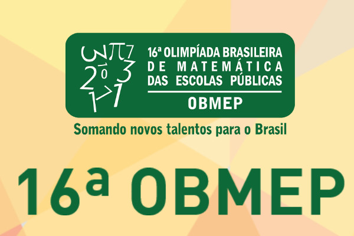

O pró-reitor de Pesquisa da USP, Sylvio Roberto Accioly Canuto, concedeu uma entrevista para falar sobre as contribuições científicas da Universidade para o combate da pandemia da covid-19
O pró-reitor de Pesquisa da USP, Sylvio Roberto Accioly Canuto, concedeu uma entrevista ao Jornal da Record, para falar sobre as contribuições científicas da Universidade para o combate da pandemia da covid-19. A entrevista faz parte da série Cência na Pandemia e foi veiculada no dia 19 de abril.
A questão da covid funcionou na USP como um incentivo muito grande para a busca de soluções, de fármacos, de vacinas, várias frentes de luta que foram feitas. Foi um engajamento muito importante e uma sintonia com os desejos da sociedade, afirmou o pró-reitor.
Durante a matéria, foram apresentadas algumas iniciativas desenvolvidas pela Universidade, como o sequenciamento do genoma do coronavírus, o projeto Inspire, os coxins, os testes para identificar a covid-19 pela saliva, entre outras.
Prof. Sylvio Canuto sobre os avanços da ciência frente à Covid-19 | Foto reprodução: Instagram
O que é o Android? Entenda a diferença para o iOS, do iPhone
Sabe o que é Android? Entenda de uma vez o que é isso que sempre falam quando o assunto envolve celular, aplicativos e recursos
Android é um sistema operacional, aquilo que dá “cara” e torna a peça de hardware aproveitável pelo usuário, nesse caso o smartphone (celular).
No computador, é comum ver o Windows como sistema operacional, combinando todo o conjunto de peças (processador, memória RAM, HD de armazenamento, placa-mãe, etc) em algo que pode ser operado pelo usuário, nós.
E, mesmo no Windows, existem os softwares, como o Microsoft Word ou o Adobe Photoshop, assim como se tem os aplicativos do celular: Facebook, Instagram, WhatsApp, Gmail…
Mas ainda assim, não é possível fazer tudo nos dispositivos móveis
8 coisas que você não sabia sobre Billie Eilish, a nova revelação da música
Se você ainda não sabe quem é Billie Eilish, pode parar tudo que estiver fazendo e ouvir A-GO-RA! A cantora americana, de apenas 17 aninhos, é a grande revelação da música e faz um som que mistura pop, hip-hop, trap, elementos eletrônicos, muita atitude e temos certeza que você não vai se arrepender!
Reprodução: Instagram
Apesar de estar no ramo da música há três anos, foi em 2019 que a cantora Billie Eilish estourou pro mundo inteiro ouvir com o seu primeiro álbum de estúdio "When We All Fall Asleep, Where Do We Go?", lançado em março deste ano. A jovem americana já é considerada uma das artistas mais relevantes e autênticas dessa geração, chamando atenção da mídia, do público e até de outros famosos, que já se declararam super fãs da cantora, como o grande frontman Dave Grohl, líder do Foo Fighters, e também o Khalid, que fez participação em sua música "Lovely". Hoje, nós do Purebreak separamos algumas curiosidades sobre a fofa pra te fazer se apaixonar de uma vez por todas.
Veja aqui uma música de trabalho da cantora
Olimpíadas de Matemática

A Olimpíada Brasileira de Matemática (OBM) é um programa da Sociedade Brasileira de Matemática
Com satisfação anunciamos a reabertura das inscrições para a 16ª Olimpíada Brasileira de Matemática das Escolas Públicas (OBMEP), que foi adiada devido à pandemia de Covid-19. As inscrições para a competição poderão ser realizadas a partir da próxima segunda-feira (19) até as 23h59 de 30 de abril.
O regulamento da 16ª OBMEP passou por mudanças e adequações significativas, que serão válidas exclusivamente para esta edição. O novo documento será publicado no site da OBMEP somente em 19 de abril, junto com a reabertura das inscrições.
Durante o novo prazo, as escolas já inscritas em 2020 que desejarem realizar mudanças nos dados da inscrição, poderão acessar a página restrita da escola na 16a OBMEP e editar as informações. Também entre 19 e 30 de abril, escolas públicas ou privadas que ainda não fizeram a inscrição para a 16ª edição da OBMEP, poderão se inscrever.
Escola pública adere ao projeto das olimpíadas
Qual a importância?
No Brasil, como em qualquer outro lugar do mundo, sempre que se refere à disciplina de
Matemática vem à tona o acentuado índice de reprovações e os fatores que dificultam a
aprendizagem dessa ciência. Tendo em vista essa realidade, o Ministério da Educação e
Cultura (MEC), o Ministério da Ciência e Tecnologia (MCT) e o Instituto Nacional de
Matemática Pura e Aplicada (IMPA), apoiados pela Sociedade Brasileira de Matemática
(SBM), criaram a Olimpíada Brasileira de Matemática das Escolas Públicas (OBMEP), com a
intenção de promover e intensificar o estudo de Matemática e, ainda, mostrar que a
Matemática é bem mais que apenas uma disciplina da escola, mas, esta inclusa e, é
utilizada para resolver problemas do cotidiano.